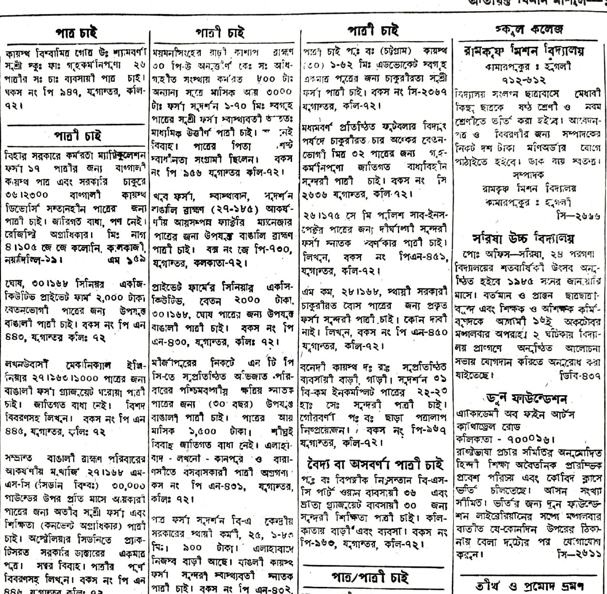
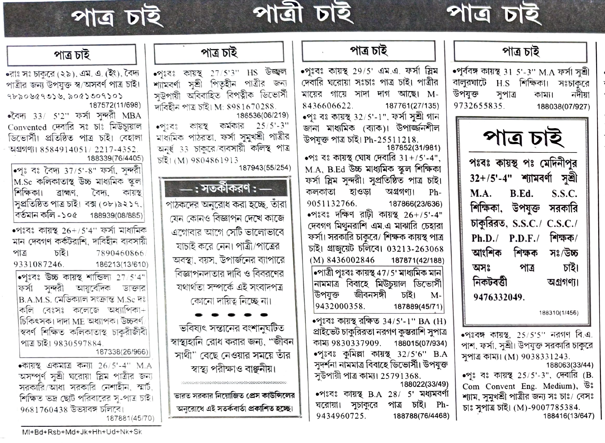
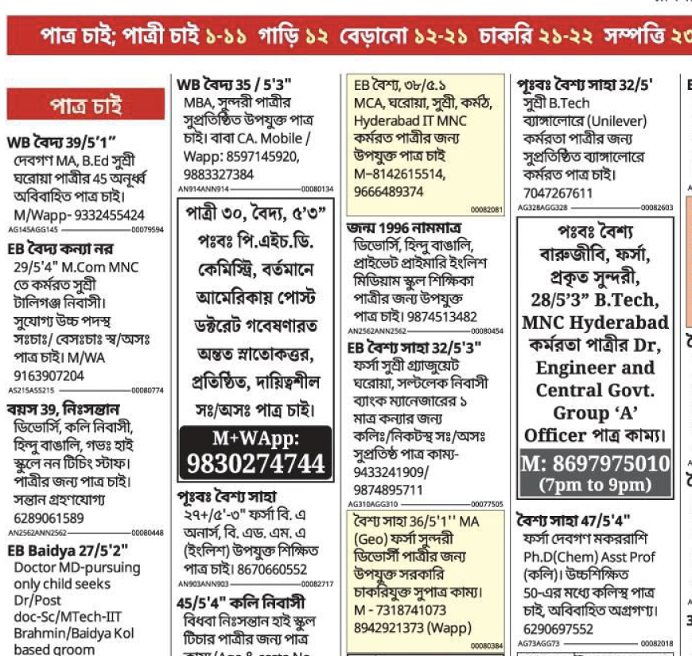
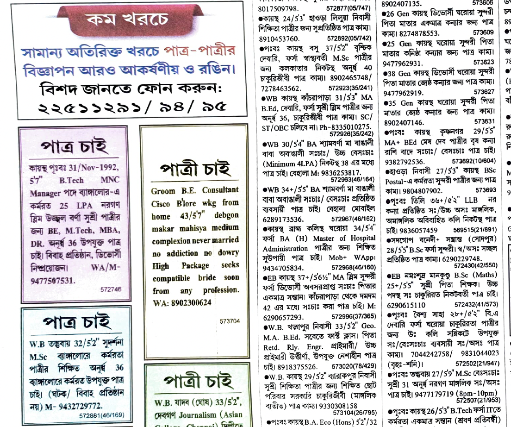
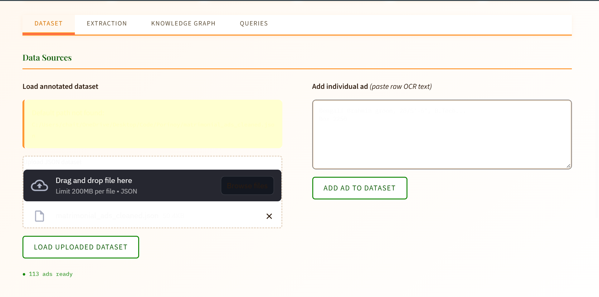
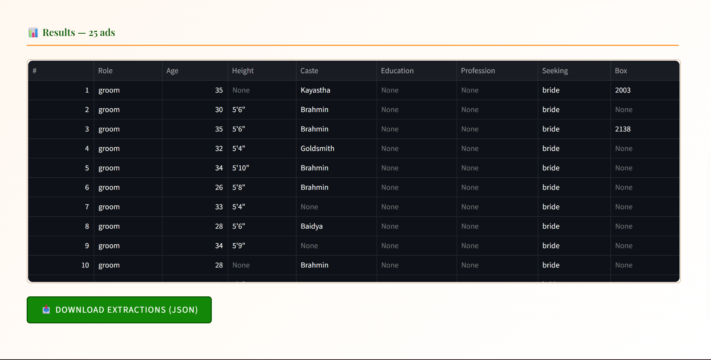
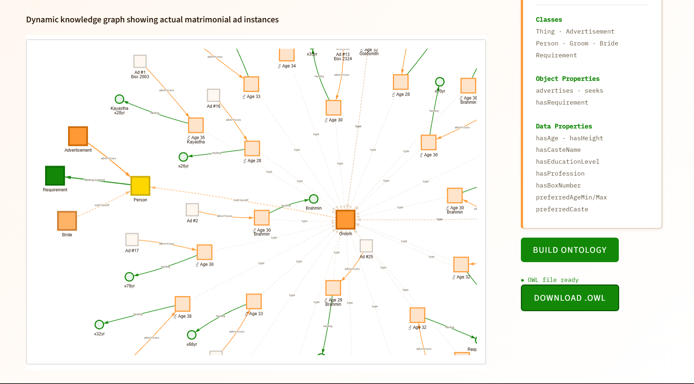
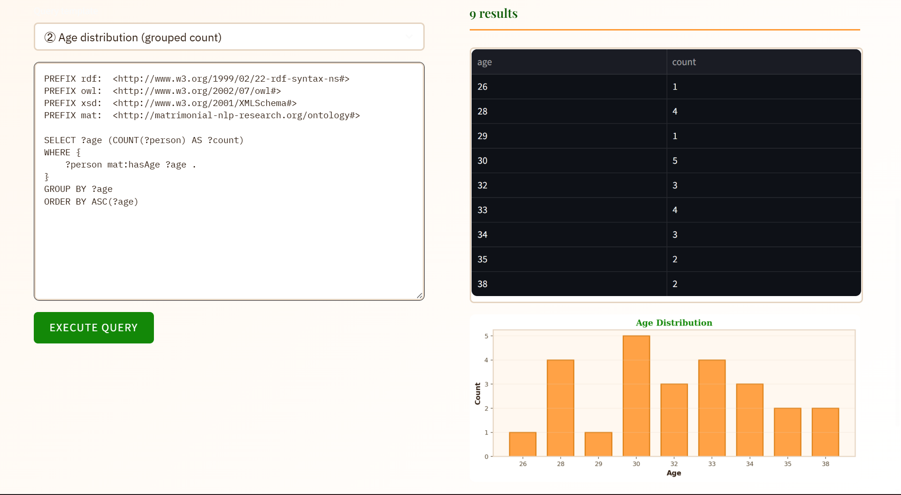
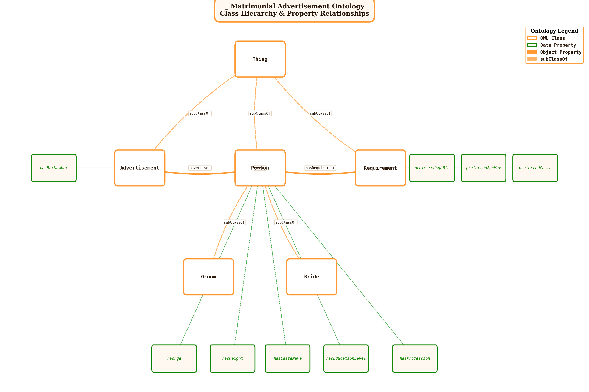

Proposed Approach
An integrated knowledge portal
An invaluable resource offering insights into the cultural practices and transitions in Bengali wedding and marriage practices over time.


1984 — Dense-packing era. Hand-set hot-metal columns, hairline rules, near-zero whitespace between listings. Ink-bleed and paper aging are common.


1998 — Early phototypesetting. Column counts increase as desktop publishing tools enter newsrooms.


2010 — Standardised grid. Digital typesetting introduces consistent gutters and grid-aligned columns.


2024 — Digital hybrid layout. Rounded card-like ad blocks, variable typography, and design flourishes appear alongside legacy column conventions.
Sourcing & Digitisation
We performed stratified sampling from six major Bengali newspapers: Ananda Bazar Patrika, Bartaman, Ei Samay, Sangbad Pratidin, Aajkaal, and Ganashakti. Physical copies were digitised at 300 DPI using flatbed scanners.
Sampling was designed to maximise temporal coverage across four print-technology eras, deliberately capturing systematic variation in typesetting convention and document degradation.
Dataset at a glance
Annotation Pipeline: Human in the Loop
Layout Segmentation
Spatial regions annotated across three semantic classes: Advertisement, Bride, and Groom. Annotators held to a strict 2px boundary tolerance.
COCO JSON formatMulti-engine OCR Drafting
A custom GUI, 3-Netra (“The Third Eye”), generates baseline transcriptions using three OCR engines: OLM-OCR2, DeepSeek-VL, and EasyOCR, run in parallel for every cropped region.
Python · custom toolSelection & Correction
Annotators select the most accurate of the three OCR candidates and edit to ground truth. 10% of samples underwent double-blind review by independent linguists.
κ > 0.85 IAAPipeline Performance
Hybrid Extraction Pipeline
A rule-based extractor handles high-precision fields while a Mistral LLM handles fields requiring linguistic understanding. Results are merged and exported as structured JSON per advertisement.
| Age · Height · Role | RULE |
| Caste · Box Number | RULE |
| Education · Profession | LLM |
| Other preferences | LLM |
SPARQL Query Examples
OWL Ontology Schema
Extracted entities populate an OWL ontology enabling SPARQL-based querying of socio-cultural patterns across the corpus.
Classes Thing → Advertisement · Person · Requirement Person → Groom · Bride Object Properties Advertisement —advertises→ Person Person —seeks→ Person Person —hasRequirement→ Requirement Data Properties Person hasAge · hasHeight hasCasteName · hasEducationLevel hasProfession Ad hasBoxNumber Requirement preferredAgeMin · preferredAgeMax preferredCaste
Serialisation: RDF/XML (.owl) · Queried via rdflib SPARQL engine
Live Research Interface — Screenshots
The following screenshots show the fully working Streamlit research interface built for Phase II, integrating OCR preprocessing, hybrid NLP extraction, OWL ontology population, interactive knowledge graph visualisation, and SPARQL querying in a single end-to-end pipeline.




